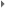

Appendix B. PROGRAM DOCUMENTATION AND INSTALLATION INSTRUCTIONS
by John Maurer <>
B.1. Opening Files In ENVI
B.2. Filtering Tools
B.3. Analysis ToolsThe following software tools have been created for opening, filtering, and analyzing Malå Geoscience RAMAC™ (http://ramac.malags.com) ground-penetrating radar (GPR) data. These tools are programmed using Research Systems, Inc.'s (RSI) Interactive Data Language (IDL) for use within RSI's Environment for Visualizing Images (ENVI) software (http://rsinc.com). These tools were programmed and tested on a Microsoft Windows personal computer using IDL 6.1 and ENVI 4.1 but should work on other operating systems and software versions. Each of the programs is individually documented and downloadable below but may be downloaded as a collection from the following compressed folder; also provided are some example input and output data files in an additional file:
GPR_IDL_tools_1.00.zip (103 KB)
GPR_example_data.zip (10.5 MB)
These software tools are saved as IDL procedures (.pro files) and should be moved to the ENVI "save_add" directory prior to use. The location of the ENVI "save_add" directory may vary on different systems, but can generally be found according to the following path on a Windows computer:
C:\RSI\IDL61\products\ENVI41\save_add\
When ENVI user functions (.pro or .sav files) are placed in the ENVI "save_add" directory, they are automatically compiled in the ENVI session's RAM when ENVI starts. Also, once a user function has been added to ENVI, its code can be modified at any time, recompiled from within the current ENVI session, and then used in its modified form without having to restart ENVI.
Furthermore, these procedures can be made part of the ENVI menus. The ENVI menu system is comprised of the "Main" menu that appears when you start ENVI and the "Functions" menu that is accessed only from image display windows. These two menus are defined by separate ASCII files located in the ENVI "menu" directory:
C:\RSI\IDL61\products\ENVI41\menu\
The "envi.men" file in the above directory defines the Main menu, and the "display.men" file defines the Functions menu. Each time a new ENVI session is started, these two menu files are read and used to construct the ENVI menus based on the content of the files. To add a new button to one of the two menus, simply add a new line to one of the files and restart ENVI. See "Modifying the ENVI Menus" in the ENVI Online Help for more details on the specific syntax and format of modifying the menu files. Each of the procedures documented below lists the necessary lines to add to the menu files. In short, however, add the following text to the bottom of "display.men" for the necessary tools to be displayed in the "Functions" menu under a menu heading labeled "GPR":
C:\RSI\IDL61\products\ENVI41\menu\display.men:
0 {GPR}
1 {Filter}
2 {Subtract Mean Trace} {not used} {subtract_mean_trace}
2 {Time-Varying Gain} {not used} {time_varying_gain}
2 {DC Removal} {not used} {dc_removal}
1 {Cursor Depth/Distance...} {not used} {cursor_depth_distance}
1 {Create XYZ File...} {not used} {collect_input_create_xyz_file}
1 {Compute Depth Statistics...} {not used} {collect_input_compute_depth_statistics}Next, add the following text to the "envi.men" file for the remaining tools to be displayed on the main ENVI menu bar. These tools are added to this menu since they can be applied to multiple GPR files and because these GPR files do not need to be already open in ENVI for these procedures to run:
C:\RSI\IDL61\products\ENVI41\menu\envi.men:
0 {GPR}
1 {Bulk Filter} {not used} {bulk_gpr_filter}
1 {Create XYZ File} {not used} {collect_input_bulk_xyz_file}
1 {Compute Depth Statistics} {not used} {collect_input_bulk_depth_statistics}The following should also be appended to the above “envi.men” file underneath the existing main “File

Open External File” section for adding a tool that can open the GPR data automatically:C:\RSI\IDL61\products\ENVI41\menu\envi.men:
0 {File}
1 {Open External File} {separator}
2 {GPR}
3 {RAMAC} {not used} {open_ramac_gpr_file}Lastly, in order for the “Cursor Depth/Distance” tools to work, you must also open the ENVI "Preferences" menu from the main ENVI "File" menu. On the main tab entitled "User Defined Files", enter "gpr_cursor_info" in the bottom text box that is labeled "User Defined Motion Routine". Click "OK" to save the new preference and choose to save these updated preferences to a file if you wish them to be saved after you close and restart ENVI. The information from this procedure will not be displayed, however, until the "Cursor Depth/Distance" function is called from either the Main or Function "GPR" menus created above. See "cursor_depth_distance.pro" below for further details.
The software tools created as part of this thesis are documented below and are divided into the following categories:
B.1. Opening Files In ENVI
B.2. Filtering Tools
B.3. Analysis Tools
Click here to download this file. (18 KB) (See also: GNU license)
Click here to download all files. (103 KB)This IDL procedure can be run in ENVI to automatically and properly import a Malå Geoscience RAMAC™ ground-penetrating radar (GPR) data file for viewing in ENVI (under ENVI's "File Open External File" file menu). The dimensions of the data file are read from an associated RAMAC "*.rad" header file and the data are transposed (rotated) so that they are displayed properly. The data file is opened in ENVI in memory and given an informative description in its ENVI header file so that if the rotated file is saved to disk this information can be referred to later. Having a procedure such as this one, though, prevents the need for saving an alternate format of the GPR data just for ENVI (and thereby doubling your space requirements) since you can view it directly from memory.
What follows are step-by-step instructions for opening a Malå Geoscience RAMAC GPR data file (*.rd3) in ENVI manually for the first time. These are essentially the steps that the current procedure enables automatically for the user:
- Determine data dimensions:
Open the *.rad file associated with the particular GPR data file that you wish to view in order to determine its dimensions:
- Determine the number of pixels in the vertical/y-axis dimension of the data. This is labeled on the first line of the *.rad file as the number of "samples". For example:
SAMPLES:1024
This will be used to identify the number of "samples" in ENVI, which confusingly represents the horizontal/x-axis dimension of the data in ENVI. (The data will be flipped vertically in ENVI when we first open the file and will subsequently require a rotation within ENVI prior to usage.)
- Determine the number of pixels in the horizontal/x-axis dimension of the data. This is labeled on the 22nd line of the *.rad file as the number of the "last trace". For example:
LAST TRACE:37745
In RAMAC GPR terminology, each line of data in the horizontal dimension is considered a single "trace" of data since it represents the data traced by radar pulses for that particular distance along the x-axis. The last trace represents the total number of pixels in the horizontal dimension and will be used to identify the number of "lines" in ENVI, which confusingly represents the vertical/y-axis dimension of the data in ENVI. (Again, the data will be flipped vertically in ENVI when we first open the file and will therefore require a rotation within ENVI prior to usage.
- Open the file in ENVI:
Open ENVI and select "Open Image File" from the "File" pull-down menu. Select the particular RAMAC GPR data file (*.rd3) that you wish to open in ENVI. A "Header Info" window will appear for you to input various characteristics about the data so that ENVI knows how to properly display it. Using the dimensions of the data determined in step 1 above, fill in each of the fields as so:
- Samples
Enter the number of "samples" determined from the *.rad file in step 1 above (e.g. 1024).
- Lines
Enter the number of the "last trace" determined from the *.rad file in step 1 above (e.g. 37745).
- Bands
Enter "1". RAMAC GPR data only consist of a single band of data.
- Offset
Enter "0". There is no header information that precedes/offsets the RAMAC GPR data.
- xstart
Use the default of "1". This will define the left-most column of data as beginning at 1.
- ystart
Use the default of "1". This will define the upper-most row of data as beginning at 1.
- Data Type
Select "Integer". NOTE: It is incorrect to select "Unsigned Integer" since the RAMAC GPR data files can contain negative values and these will be incorrectly represented as very large positive values if you select "Unsigned Integer" as the data type.
- Byte Order
If the data were collected on a computer running the Windows operating system, select "Host (Intel)" byte order. If the data were collected on a computer running a Unix-based operating system (ex. SGI, Sun, or Linux operating systems), select "Network (IEEE)" byte order. If you have selected the incorrect byte order, the data will obviously appear incorrect when displayed.
- File Type
Select the default of "ENVI Standard".
- Interleave
Select the default of "BSQ". Because the data contain only a single band, the band interleave that you select is irrelevant and any option will work equally well. NOTE: "BSQ" stands for band-sequential, "BIL" stands for band interleaved by line (y-dimension), and "BIP" stands for band interleaved by pixel (x-dimension).
- Description
In the text box at the bottom of the window you can enter any description of the data file that you like. The default description is "File imported into ENVI." If desired, enter informative details about the data file such as, "Mala Geoscience RAMAC 1000 MHz GPR data file from the NASA-U Greenland Climate Network (GC-Net) automatic weather station (AWS) collected on June 1 2003." NOTE: Avoid commas because the description will not display properly when viewing the header in ENVI.
Select "OK" after entering the above selections and the file will automatically appear in a new "Available Bands List" window. Select the file from this window, use the default display mode of "Gray Scale" (the data are not in color), and then select "Load Band" to load the data for display. If any of the above fields were accidentally entered incorrectly and the data are displayed incorrectly, you can always right-click on the data file in the "Available Bands List" window and select "Edit Header..." to go back to the "Header Info" window and edit the appropriate field.
NOTE: An ENVI header file (*.hdr) will now be saved in the same directory as the original data file (*.rd3). This file contains all of the information entered above so that the next time you open the file in ENVI, it will automatically pop into the "Available Bands List" window without requiring to re-enter all of the above information in the "Header Info" window. If the ENVI header file is ever removed or moved to a different directory from the data file, ENVI will require you to re-enter all of the above information the next time you attempt to open the data file in ENVI.
- Rotate the file in ENVI:
You will notice that the GPR data are flipped vertically when you first open them for display in ENVI after completing steps 1-2 above. The next step is to rotate the data so that they are oriented properly in ENVI. To do this, select "Rotate/Flip Data" from the main ENVI "Basic Tools" menu at the top of the screen. In the "Rotation Input File" window that pops-up, select the GPR data file that you wish to rotate and select "OK".
NOTE: If you are subsetting the original GPR data, you can also choose a "Spatial Subset" before selecting "OK" to only apply and output the rotation on a small section of the original data file. This may be desired, for example, if the original data file contains all of the transects that are part of a larger gridded survey and you wish to split the data file into its individual transect components for convenience and quickness during post-processing.
In the "Rotation Parameters" window that follows, press the toggle button next to "Transpose" to change the option to "Yes". Use the default of zero (0) for the rotation "Angle." Select to "Output Result to" a file and then select an output filename (e.g. "*_ENVI.bin") if you wish to save the rotated data. Use the default "Background Value" of 0.00. The image rotation will take some time to complete before the new, rotated file will automatically appear in the "Available Bands List" for display. NOTE: It is incorrect to select a rotation angle of 90 degrees and no transpose: although this will rotate the data into the proper orientation, it will make the first sample of the image file be the last sample of the actual data.
- The file is now displayed correctly in ENVI and ready for processing.
TO USE IN ENVI:
After saving this procedure in the ENVI "save_add" directory, look for the following line in ENVI's main menu configuration file (envi.men) located in ENVI's "menu" directory:
1 {Open External File} {separator}
Add the following lines beneath the above line prior to opening ENVI.
2 {GPR}
3 {RAMAC} {not used} {open_ramac_gpr_file}This procedure can then be run from the pull-down menu labeled "Open External File" under the main "File" menu option on ENVI's main menu bar. Along with the existing external file formats, at the top you will now see "GPR" as a category and "RAMAC" as a type of GPR file.
- subtract_mean_trace.pro
- collect_input_subtract_mean_trace.pro
- time_varying_gain.pro
- collect_input_time_varying_gain.pro
- dc_removal.pro
- collect_input_dc_removal.pro
- bulk_gpr_filter.pro
Click here to download this file. (22 KB) (See also: GNU license)
Click here to download all files. (103 KB)NOTE: Requires the following other file:
This IDL procedure can be run in ENVI to simulate the "subtract mean trace" image-processing filter available within Malå Geoscience "GroundVision" software that is used to acquire and process Malå Geoscience RAMAC™ ground-penetrating radar (GPR) data. As described in Appendix 1 of the GroundVision Manual:
"This filter is used to remove horizontal and nearly horizontal features in the radargram by subtracting a calculated mean trace from all traces. The running average version subtracts a mean trace calculated in a window centered at the trace to be filtered. The size of the window is selected by the 'Number of traces to use in filter process' edit box. The Total average method calculates the mean trace as the mean of the whole data file."
A "trace" is a single, vertical column of GPR data, representing the signal "traced" by a radar pulse as it travels from the instrument into the subsurface. Each trace is composed of individual "samples," the smallest measurement unit in the vertical dimension.
In following with the description above, this IDL procedure filters a GPR image (that has already been formatted to view properly in ENVI) using the following methodology:
- Ask the user for a subtraction method (either running average or total average) and for a window length (in traces) to apply to the filter if running average
is the selected subtraction method. This information can be provided to the program in one of two ways:
- through the use of a graphical user interface (GUI) that pops up when calling the program from within an ENVI image pull-down menu, or
- automatically through the use of command-line options at the IDL prompt or from within another IDL program (to facilitate the application of this filter programmatically across multiple files).
The IDL procedure then applies the following mean-subtraction filter to the data on a row-by-row basis (note: rows are oriented horizontally in the data, as opposed to traces, which are oriented vertically):
- Calculate the mean data value for the row, either for the entire row (total average method) or for a window centered around the current trace (running average method).
- Subtract this mean data value from each pixel in the row. Note that pixels that used to have the mean data value will now have a data value of 0. This also means that pixels that used to have data values less than the mean will now be negative. Negative data values are acceptable in these data, however.
TO USE IN ENVI:
After saving this procedure in the ENVI "save_add" directory, add the following lines to ENVI's function menu configuration file (display.men) located in ENVI's "menu" directory:
0 {GPR}
1 {Filter}
2 {Subtract Mean Trace} {not used} {subtract_mean_trace}This procedure can then be run from the pull-down menu labeled "GPR" on a GPR file that you have already opened in ENVI. The result can either be saved to memory or to a new file.
TO USE IN IDL:
subtract_mean_trace, input_location = input_location, [window_length = window_length,] output_location = output_location
Keywords:
input_location = full pathname and filename of the file to filter, surrounded by quotes ("").
window_length (optional) = length in traces (horizontal dimension, or x-axis) to use in the running average subtraction method. Must be an integer between 2 and the total number of traces in the file. If this keyword is not supplied, the program will assume a total average subtraction method.
output_location = full pathname and filename of a file to output the filtered result to, surrounded by quotes ("").
Examples:
subtract_mean_trace, input_location = "C:\data\ramac_gpr.bin", window_length = 60, output_location = "C:\data\ramac_gpr_filtered.bin"
subtract_mean_trace, input_location = "/home/maurer/data/ramac_gpr.bin", output_location = "/home/maurer/data/ramac_gpr_filtered.bin"Click here to download this file . (8 KB) (See also: GNU license)
Click here to download all files. (103 KB)NOTE: Requires the following other file:
This IDL function is called by or for the "Subtract Mean Trace" ground-penetrating radar (GPR) image-processing filter (subtract_mean_trace.pro) to collect user input. It displays a window for the user to enter a subtraction method (either running average or total average) and for a window length (in traces) to apply to the filter if running average is the selected subtraction method. A "trace" is a single, vertical column of GPR data, representing the signal "traced" by a radar pulse as it travels from the instrument into the subsurface.
TO USE IN IDL:
result = collect_input_subtract_mean_trace( [num_traces = num_traces], [/SPECIFY_OUTPUT] )
Return Value:
result.accept = 1 if user selects "OK", 0 if "Cancel".
result.subtraction_method = either "running average" or "total average".
result.window_length = length of a sliding time window in number of traces (horizontal- or x- dimension) over which the filter is applied. If the optional keyword "num_traces" is not supplied, this field will instead return the length of the window in the percent of the total number of traces in the file (0% = 2 traces; 100% = all traces).
result.output_location = where to output filtered result, either to memory or to a file:
result.output_location.in_memory = 1 if output is to memory.
result.output_location.name = full path and filename of file to output to.Keywords:
num_traces (optional) = total number of traces (horizontal- or x- dimension) in the file being filtered. Used to provide a slider between two samples and the total number of samples in the file for the user to select a window length. If not provided, the slider will instead be between 0% (2 samples) and 100% (all samples), necessary when the number of samples in the file being filtered is not known in advance.
SPECIFY_OUTPUT (optional) = when this keyword is set, the widget will ask the user whether to save the output to memory or to a file; if the user chooses to output to a file, the widget will also ask the user where to save the file and what to name it.
Examples:
result = collect_input_subtract_mean_trace( num_traces = 1031 )
result = collect_input_subtract_mean_trace( num_traces = 1031, /SPECIFY_OUTPUT )
result = collect_input_subtract_mean_trace()Click here to download this file. (23 KB) (See also: GNU license)
Click here to download all files. (103 KB)NOTE: Requires the following other file:
This IDL procedure can be run in ENVI to simulate the "Time-Varying Gain" image processing filter available within Malå Geoscience "GroundVision" software that is used to acquire and process Malå Geoscience RAMAC™ ground-penetrating radar (GPR) data. As described in Appendix 1 of the GroundVision Manual:
"The Time-Gain filter applies a time-varying gain to compensate for amplitude loss due to spreading and attenuation. The trace is multiplied by a gain function combining linear and an exponential gain, with coefficients set by the user."
A "trace" is a single, vertical column of GPR data, representing the signal "traced" by a radar pulse as it travels from the instrument into the subsurface. Each trace is composed of individual "samples," the smallest measurement unit in the vertical dimension. Because of geometrical "spreading," the radar signal decreases in strength with depth as 1/r2, where r is depth.
In following with the description above, this IDL procedure filters a GPR image (that has already been formatted to view properly in ENVI) using the following methodology:
- Collect the necessary user input:
- Ask the user for the "time window" of the GPR data being filtered. The time window is the amount of time that the GPR instrument was set to "listen" for radar pulses per trace at the time of data acquisition. This value is used to compute the gain function in step 2 below and can be found in the "*.rad" file associated with a particular RAMAC GPR data file ("*.rd3"), labeled "TIMEWINDOW" and reported in nanoseconds (10-9 seconds).
- Ask the user for the start sample at which to begin applying the time-varying gain, providing a reasonable default as GroundVision does. The user may prefer to set the start sample below any outstanding features within the trace. The time-varying gain will be applied to all samples between the selected start sample and the last sample of each trace.
- Ask the user for linear (A) and exponential (B) gain factors to be applied in the equation outlined in step 2 below. Typical values range anywhere between 0 and ~1000 for linear gain and 0 and ~150 for exponential gain. Increasing the exponential gain has the effect of dramatically amplifying the gain of the lower portion of the trace, which may be important if there are features you are looking for in the deeper portion of the GPR data.
This information can be provided to the program in one of two ways:
- through the use of a graphical user interface (GUI) that pops up when calling the program from within an ENVI image pull-down menu, or
- automatically through the use of command-line options at the IDL prompt or from within another IDL program (to facilitate the application of this filter programmatically across multiple files).
The IDL procedure then applies the following time-varying gain function to the data on a trace-by-trace basis:
- Multiply each sample in the trace from the selected start sample to the last sample in the trace by a gain factor computed according to the following equation (note: this is the same equation used in the "GroundVision" software):
(A*time) + e(B*time)
where "A" is the linear gain factor and "B" is the exponential gain factor selected by the user in step 1c above. Time, here, is expressed in microseconds (10-6 seconds) and is computed from the time window input by the user in step 1 above (in nanoseconds, or 10-9 seconds) according to the following equation:
time = ((time window) ÷ (total samples per trace)) * (number of samples filtered so far)
where "time window" is first divided by 1000 to convert it from nanoseconds (10-9 seconds) to microseconds (10-6 seconds).
TO USE IN ENVI:
After saving this procedure in the ENVI "save_add" directory, add the following lines to ENVI's function menu configuration file (display.men) located in ENVI's "menu" directory:
0 {GPR}
1 {Filter}
2 {Time Varying Gain} {not used} {time_varying_gain}This procedure can then be run from the pull-down menu labeled "GPR" on a GPR file that you have already opened in ENVI. The result can either be saved to memory or to a new file.
TO USE IN IDL:
time_varying_gain, input_location = input_location, time_window = time_window, start_sample = start_sample, linear_gain = linear_gain, exponential_gain = exponential_gain, output_location = output_location
Keywords:
input_location = full pathname and filename of file to filter, surrounded by quotes ("").
time_window = the amount of time in nanoseconds (10-9 seconds) that the GPR instrument was set to "listen" for radar pulses per trace at the time of data acquisition.
start_sample = sample number (vertical dimension, or y-axis) to begin applying the filter at. Must be an integer between 1 (the first sample at the top of the file) and the total number of samples in the file.
linear_gain = scale factor to apply in linear gain component. Must be between 0 and 1000.
exponential_gain = scale factor to apply in exponential gain component. Must be between 0 and 1000.
output_location = full pathname and filename of file to output the filtered result to, surrounded by quotes ("").
Examples:
time_varying_gain, input_location = "C:\data\ramac_gpr.bin", time_window = 42.522624, start_sample = 1, linear_gain = 135, exponential_gain = 80, output_location = "C:\data\ramac_gpr_filtered.bin"
time_varying_gain, input_location = "/home/maurer/data/ramac_gpr.bin", time_window = 5247.0, start_sample = 17, linear_gain = 0, exponential_gain = 4, output_location = "/home/maurer/data/ramac_gpr_filtered.bin"Click here to download this file. (12 KB) (See also: GNU license)
Click here to download all files. (103 KB)NOTE: Requires the following other file:
This IDL function is called by or for the "Time-Varying Gain" ground-penetrating radar (GPR) image-processing filter (time_varying_gain.pro) to collect user input. It displays a window for the user to enter the following information:
- Ask the user for the "time window" of the GPR data being filtered. The time window is the amount of time that the GPR instrument was set to "listen" for radar pulses per trace at the time of data acquisition. This value is used to compute the gain function and can be found in the "*.rad" file associated with a particular RAMAC GPR data file ("*.rd3"), labeled "TIMEWINDOW" and reported in nanoseconds (10-9 seconds).
- Ask the user for the start sample at which to begin applying the time-varying gain, providing a reasonable default as GroundVision does. The user may prefer to set the start sample below any outstanding features within the trace. The time-varying gain will be applied to all samples between the selected start sample and the last sample of each trace.
- Ask the user for linear (A) and exponential (B) gain factors to be applied in the filter. Typical values range anywhere between 0 and ~1000 for linear gain and 0 and ~150 for exponential gain. Increasing the exponential gain has the effect of dramatically amplifying the gain of the lower portion of the trace, which may be important if there are features you are looking for in the deeper portion of the GPR data.
NOTE: A "trace" is a single, vertical column of GPR data, representing the signal "traced" by a radar pulse as it travels from the instrument into the subsurface.
TO USE IN IDL:
result = collect_input_time_varying_gain( [num_samples = num_samples], [/SPECIFY_OUTPUT] )
Return Value:
result.accept = 1 if user selects "OK", 0 if "Cancel".
result.time_window = amount of time (ns) that the GPR instrument was set to "listen" for radar pulses per trace at the time of data acquisition.
result.start_sample = start sample (vertical- or y- dimension) at which to begin applying the time-varying gain on a trace-by-trace basis. If the optional keyword "num_samples" is not supplied, this field will instead return the percent (0-100) of the sample to start at between the first sample (0%) and the last sample (100%) in the file.
result.linear_gain = linear gain factor, between 0 and 1000.
result.exponential_gain = exponential gain factor, between 0 and 1000.
result.output_location = where to output filtered result, either to memory or to a file:
result.output_location.in_memory = 1 if output is to memory.
result.output_location.name = full path and filename of file to output to.Keywords:
num_samples (optional) = total number of samples (vertical- or y- dimension) in the file being filtered. Used to provide a slider between the first sample and the last sample for the user to select a start sample. If not provided, the slider will instead be between 0% (first sample) and 100% (last sample), necessary when the number of samples in the file being filtered is not
known in advance.SPECIFY_OUTPUT (optional) = when this keyword is set, the widget will ask the user whether to save the output to memory or to a file; if the user chooses to output to a file, the widget will also ask the user where to save the file and what to name it. This would not be set, for example, if using the function programmatically to collect input parameters for several filters before asking where to save the output file(s) separately.
Examples:
result = collect_input_time_varying_gain( num_samples = 1024 )
result = collect_input_time_varying_gain( num_samples = 1024, /SPECIFY_OUTPUT )
result = collect_input_time_varying_gain()Click here to download this file. (22 KB) (See also: GNU license)
Click here to download all files. (103 KB)NOTE: Requires the following other file:
This IDL procedure can be run in ENVI to simulate the "DC removal" image processing filter available within Malå Geoscience "GroundVision" software that is used to acquire and process Malå Geoscience RAMAC™ ground-penetrating radar (GPR) data. "DC" stands for an electrical "direct current." As described in Appendix 1 of the GroundVision Manual:
"There is often a constant offset in the amplitude of the registered trace. This is known as the DC level or the DC offset. This filter removes the DC component from the data. The DC component is individually calculated and removed for each trace [...]. The sample interval on which the DC component is calculated is specified [by the user]. The end sample is always the last sample in each trace and the start sample is set [by the user]."
A "trace" is a single, vertical column of GPR data, representing the signal "traced" by a radar pulse as it travels from the instrument into the subsurface. Each trace is composed of individual "samples," the smallest measurement unit in the vertical dimension.
In following with the description above, this IDL procedure filters a GPR image (that has already been formatted to view properly in ENVI) using the following methodology:
- Ask the user for the start sample for calculation of each trace's DC level. This start sample should be set below any outstanding features within the trace to cover an area where DC noise is the prominent feature. This information can be provided to the program in one of two ways:
- through the use of a graphical user interface (GUI) that pops up when calling the program from within an ENVI image pull-down menu, or
- automatically through the use of command-line options at the IDL prompt or from within another IDL program (to facilitate the application of this filter programmatically across multiple files).
The IDL procedure then applies the following DC removal method to the data on a trace-by-trace basis:
- Calculate the standard deviation of the data between the user-selected start sample and the last sample of the trace in order to compute the offset to be removed from the trace's data.
- Calculate the mean data value of the entire trace.
- For every sample in the trace, subtract the standard deviation from the sample's data value if it is greater than the mean plus the standard deviation. Add the standard deviation to the sample's data value if it is less than the mean minus the standard deviation. Otherwise, set the sample's data value equal to the mean.
TO USE IN ENVI:
After saving this procedure in the ENVI "save_add" directory, add the following lines to ENVI's function menu configuration file (display.men) located in ENVI's "menu" directory:
0 {GPR}
1 {Filter}
2 {DC Removal} {not used} {dc_removal}This procedure can then be run from the pull-down menu labeled "GPR" on a GPR file that you have already opened in ENVI. The result can either be saved to memory or to a new file.
TO USE IN IDL:
dc_removal, input_location = input_location, start_sample = start_sample, output_location = output_location
Keywords:
input_location = full pathname and filename of file to filter, surrounded by quotes ("").
start_sample = sample number (vertical dimension, or y-axis) to begin calculation of DC component from. Must be an integer between 1 (the first sample at the top of the file) and the total number of samples in the file.
output_location = full pathname and filename of file to output the filtered result to, surrounded by quotes ("").
Examples:
dc_removal, input_location = "C:\data\ramac_gpr.bin", start_sample = 150, output_location = "C:\data\ramac_gpr_filtered.bin"
dc_removal, input_location = "/home/maurer/data/ramac_gpr.bin", start_sample = 23, output_location = "/home/maurer/data/ramac_gpr_filtered.bin"
Click here to download this file. (7 KB) (See also: GNU license)
Click here to download all files. (103 KB)NOTE: Requires the following other file:
This IDL function is called by or for the "DC Removal" ground-penetrating radar (GPR) image-processing filter (dc_removal.pro) to collect user input. It displays a window for the user to enter a start sample for calculation of each trace's DC level. "DC" stands for an electrical "direct current." A "trace" is a single, vertical column of GPR data, representing the signal "traced" by a radar pulse as it travels from the instrument into the subsurface.
TO USE IN IDL:
result = collect_input_dc_removal( [num_samples = num_samples], [/SPECIFY_OUTPUT] )
Return Value:
result.accept = 1 if user selects "OK", 0 if "Cancel".
result.start_sample = start sample (vertical- or y- dimension) at which to begin computing the DC level on a trace-by-trace basis. If the optional keyword "num_samples" is not supplied, this field will instead return the percent (0-100) of the sample to start at between the first sample (0%) and the last sample (100%) in the file.
result.output_location = where to output filtered result, either to memory or to a file:
result.output_location.in_memory = 1 if output is to memory.
result.output_location.name = full path and filename of file to output to.Keywords:
num_samples (optional) = total number of samples (vertical- or y- dimension) in the file being filtered. Used to provide a slider between the first sample and the last sample for the user to select a start sample. If not provided, the slider will instead be between 0% (first sample) and 100% (last sample), necessary when the number of samples in the file being filtered is not known in advance.
SPECIFY_OUTPUT (optional) = when this keyword is set, the widget will ask the user whether to save the output to memory or to a file; if the user chooses to output to a file, the widget will also ask the user where to save the file and what to name it.
Examples:
result = collect_input_dc_removal( num_samples = 1024 )
result = collect_input_dc_removal( num_samples = 1024, /SPECIFY_OUTPUT )
result = collect_input_dc_removal()Click here to download this file. (46 KB) (See also: GNU license)
Click here to download all files. (103 KB)NOTE: Requires the following other files:
- collect_input_subtract_mean_trace.pro
- collect_input_time_varying_gain.pro
- collect_input_dc_removal.pro
This IDL procedure applies selected image-processing filters on one or more Malå Geoscience RAMAC™ ground-penetrating radar (GPR) data files that have been previously formatted for viewing in ENVI. The following filters have been implemented as IDL procedures by the author to simulate filters available within Malå Geoscience "GroundVision" software that is used to acquire and process RAMAC GPR data (GroundVision does not allow the user to permanently apply filtering to the data or to save the results to another file):
- Subtract Mean Trace (subtract_mean_trace.pro)
Removes horizontal and nearly horizontal features within the radargram (i.e. "ringing") by subtracting a calculated mean trace from all traces. NOTE: A "trace" is a single, vertical column of GPR data, representing the signal "traced" by a radar pulse as it travels from the instrument into the subsurface. Each trace is composed of individual "samples," the smallest measurement unit in the vertical dimension.
- Time-Varying Gain (time_varying_gain.pro)
Applies a time-varying (i.e. depth-varying) gain to compensate for amplitude loss due to spreading and attenuation. Each radar trace is multiplied by a gain function combining linear and exponential components, with coefficients set by the user.
- DC Removal (dc_removal.pro)
There is often a constant offset in the amplitude of each radar trace caused by interference from direct current (DC) used to power the GPR instrument. This filter removes the DC component from the data, which has the effect of making the data less noisy, or smoothing the data.
Refer to the documentation within each of the aforementioned IDL procedures above for further details on their operation. Each is located in the ENVI "save_add" directory.
This IDL procedure operates in the following manner:
- Collect the necessary user input:
- Ask the user to select the input files to be filtered. These must all be in the same directory. The user can use Shift-click to select multiple contiguous files or Ctrl-click to individually select multiple files.
- The user must then check off the filters to be applied to the input files from a list of the available filters and select the order in which these filters should be applied to the files.
- An input window will then appear for each of the selected filters for the user to provide the necessary parameters to be applied for these filters.
- Lastly, the user must select an output directory to save the resulting files to. Also, a filename pattern must be determined for naming the output files, including a basename, suffix, and the format of an incrementing number to be inserted in the middle.
- Display the user's selections and ask the user for confirmation before continuing. Also ask the user for an existing or new log file to write messages to during processing.
- The IDL procedure then applies the above selected filters in the order specified on a on a file-by-file basis. A status window will display the percentage of completion for all of the files to be filtered. This status window includes a "Cancel" button to terminate the program prematurely. Individual status windows are also displayed for the progress of each individual filter that is run. Status messages will also be written to the specified log file so that a history of events can be viewed after processing is complete.
TO USE IN ENVI:
After saving this procedure in the ENVI "save_add" directory, add the following lines to ENVI's main menu configuration file (envi.men) located in ENVI's "menu" directory:
0 {GPR}
1 {Bulk Filter} {not used} {bulk_gpr_filter}This procedure can then be run from the pull-down menu labeled "GPR" on ENVI's main menu bar.
Cursor Depth/Distance:
- gpr_cursor_info.pro
- cursor_depth_distance.pro
- get_gpr_depth.pro
- collect_input_get_gpr_depth.pro
- get_gpr_distance.pro
Create XYZ File:
Compute Depth Statistics:
- compute_depth_statistics.pro
- collect_input_compute_depth_statistics.pro
- collect_input_bulk_depth_statistics.pro
Cursor Depth/Distance:
Click here to download this file. (11 KB) (See also: GNU license)
Click here to download all files. (103 KB)NOTE: Requires the following other files:
This IDL procedure can be run in ENVI to track the depth and distance of the current cursor location as it is moved over any image window of a Malå Geoscience RAMAC™ ground-penetrating radar (GPR) data file. As an interactive user-defined ENVI motion routine, this procedure has access to information about the position of the current pixel (i.e. the pixel under the cursor cross-hairs). In order for ENVI to know that it must pass cursor information to this procedure, you must first define this procedure in the ENVI Configuration File. Under the main ENVI "File" menu, select "Preferences". Next, under the tab entitled "User Defined Files", enter the name of this procedure (i.e. "gpr_cursor_info") into the text box labeled "User Defined Motion Routine" at the bottom of the form. Then press "OK" to save the new configuration. See "User Move Routines" in the ENVI Online Help document for further details on ENVI user-defined move and motion routines.
This procedure will then be supplied with cursor location information as you steer the mouse over an image window of RAMAC GPR data. This information is then used by the helper procedure entitled "cursor_depth_distance.pro" (which should reside in the ENVI "save_add" directory) to display a widget that will display the depth (y-axis) and distance (x-axis) (both in meters) of the current cursor location. To compute the depth and distance, it uses input parameters from the user supplied in a widget displayed by "cursor_depth_distance.pro" that get saved in global variables and passed to two routines for calculation: "get_gpr_depth.pro" and "get_gpr_distance.pro", respectively (both of which also should reside in the ENVI "save_add" directory). Although the current procedure (i.e. "gpr_cursor_info") generates the final widget that displays the cursor location, depth and distance, this widget will not appear until "cursor_depth_distance.pro" is called by the user: this helper procedure gets called when the user selects "Cursor Depth/Distance..." from the "GPR" pull-down menu on the image window. Before the information can be displayed, the user must first enter information about the current GPR file before it can be computed; namely, the time window, ground velocity, start distance, and end distance. See "cursor_depth_distance.pro" for further details.
TO USE IN ENVI:
After saving this procedure in the ENVI "save_add" directory, open the ENVI "Preferences" menu from the main ENVI "File" menu. On the main tab entitled "User Defined Files", enter "gpr_cursor_info" in the bottom text box that is labeled "User Defined Motion Routine". Click "OK" to save the new preference and choose to save these updated preferences to a file if you wish them to be saved after you close and restart ENVI. The information from this procedure will not be displayed, however, until the associated "cursor_depth_distance.pro" procedure is called. See "cursor_depth_distance.pro" for further details.
Click here to download this file. (13 KB) (See also: GNU license)
Click here to download all files. (103 KB)NOTE: Requires the following other files:
This IDL procedure can be run in ENVI to track the depth and distance of the current cursor location as it is moved over any image window of a Malå Geoscience RAMAC™ ground-penetrating radar (GPR) data file. The current procedure gets called by selecting the "Cursor Depth/Distance..." option from the "GPR" pull-down menu of the image window. A widget will then appear that asks the user to define certain characteristics about the currently displayed GPR file so that the cursor depth and distance can be computed. Namely, the time window (in nanoseconds), ground velocity (in meters per nanosecond), start distance of the left-most pixel in the data file (in meters), and the end distance of the right-most pixel in the data file (in meters). The time window is automatically determined from the ENVI header file (*.rad) associated with the current data file (*.rd3) after asking the user where the header file (*.rad) is located.
The time window and ground velocity terminology and usage is modeled after RAMAC GroundVision software, which similarly requires the user to enter these parameters in order to convert time to depth for the scale bars that are displayed to the right and left of the data imagery in GroundVision. The time window is the amount of time (in nanoseconds) that the radar receiver was set to "listen" for the return pulse after each radar pulse was released from the transmitting antenna during data acquisition. If the time window is set to 40 ns, for example, that means an individual radar pulse has a maximum time duration of 20 ns to reach a reflector and 20 more ns to reflect back to the receiver in order to be recorded in the data file. The bottom of the data file therefore represents a maximum duration of 20 ns for a time window of 40 ns. The ground velocity represents (in meters per nanosecond) how fast the radar pulses traveled through the subsurface medium being imaged in the data file. Ground velocities range from slow (e.g. 0.03 m/ns for fresh water) to fast (e.g. 0.3 m/ns for air) and the user should refer to a GPR textbook or manual for the proper value related to the media being imaged. For dry snow on the Greenland ice sheet, for example, an average value of 0.236 m/ns may suffice if the value has not been measured in a snow pit, based on an average dry snow density of 0.3 grams per cubic centimeter that has been empirically related to a dry snow permittivity of 1.62 by the following publication:
Mätzler, C. (1996), Microwave permittivity of dry snow. IEEE Transactions on Geoscience and Remote Sensing. 34(2): 573-581.
Given an average dry snow permittivity of 1.62, an average radar velocity of 0.236 m/ns can be derived by dividing the speed of light in a vacuum (0.3 m/ns) by the square root of this permittivity.
The user may also select the sample of the "first arrival" of the radar pulse reaching the subsurface: depth computations will start at this sample number (y-axis). Often in GPR data, there is an obvious lack of backscatter at the top of the file that results from the empty space that occurred between the antenna and the surface. The first arrival begins at the point where obvious backscatter begins. The user may also select whether or not to adjust the first arrival travel time by the "direct wave." The direct wave is the part of the transmitted energy that travels the shortest distance between the transmitter and receiver. Due to antenna separation, the wave traveling from the transmitter directly to the receiver (i.e. the direct wave) is received some time after the actual transmission. This means that the transmitted pulse has already penetrated the medium a certain distance before the direct wave is received. The result of this is that the depth scale zero must be corrected to be accurate. The zero for the depth scale is calculated using the first arrival value, the antenna separation, and the first arrival adjustment velocity. The adjustment velocity can be set to any value. Practically however, it can be the ground velocity, the air velocity (most common), or anything in between depending on the antenna configuration.
The start and end distances may only be educated guess-timates if you have not measured the distance of your GPR survey in the field. In most cases, the start distance will be 0 meters but can be set differently. The distance of the current cursor location will be interpolated between the provided start and end distances. If you do not know the distance of your survey, you may provide 0 for both distances, or just make something up and ignore the distance field in the output widget.
These input parameters are then stored in global ("common") variables that are accessible by a user-defined ENVI motion routine named "gpr_cursor_info.pro" that is responsible for displaying a widget window that updates the current depth (y-axis) and distance (x-axis) (both in meters) of the cursor as the mouse is moved over the surface of an image display of any RAMAC GPR file. See "gpr_cursor_info.pro" for further details and on how to set that procedure up as a viable ENVI user-defined motion routine (NOTE: this requires changes to the ENVI Preferences).
TO USE IN ENVI:
After saving this procedure in the ENVI "save_add" directory, add the following lines to ENVI's function menu configuration file (display.men) located in ENVI's "menu" directory:
0 {GPR}
1 {Cursor Depth/Distance...} {not used} {cursor_depth_distance}This procedure can then be run from the pull-down menu labeled "GPR" on a GPR file that you have already opened in ENVI.
Click here to download this file. (15 KB) (See also: GNU license)
Click here to download all files. (103 KB)This IDL function returns the depth in meters of a given sample (y-axis) in a Malå Geoscience RAMAC™ ground-penetrating radar (GPR) data file based on the time window (in nanoseconds) of the data file and the ground velocity (in meters per nanosecond) of radar through the imaged subsurface medium/media.
NOTE: A "trace" is a single, vertical column of GPR data, representing the signal "traced" by a radar pulse as it travels from the instrument into the subsurface. Traces are herein described to be composed of a number of samples (vertical dimension, or y-axis), and the number of traces are used to describe the horizontal dimension, or x-axis. Note that in ENVI-terminology, "samples" are counted in the horizontal dimension, in contrast, and "lines" are counted in the vertical dimension, but we use GPR-terminology here instead to avoid confusion.
The "time window" and "ground velocity" terminology are common in the GPR literature and are herein modeled after RAMAC GroundVision software, which similarly requires the user to enter these parameters in order to convert time to depth for the scale bars that are displayed to the right and left of the data imagery in GroundVision. The time window is the amount of time (in nanoseconds) that the radar receiver was set to "listen" for the return pulse after each radar pulse was released from the transmitting antenna during data acquisition. If the time window is set to 40 ns, for example, that means an individual radar pulse has a maximum time duration of 20 ns to reach a reflector and 20 more ns to reflect back to the receiver in order to be recorded in the data file. The bottom of the data file therefore represents a maximum duration of 20 ns for a time window of 40 ns. The ground velocity represents (in meters per nanosecond) how fast the radar pulses traveled through the subsurface medium being imaged in the data file. Ground velocities range from slow (e.g. 0.03 m/ns for fresh water) to fast (e.g. 0.3 m/ns for air) and the user should refer to a GPR textbook or manual for the proper value related to the media being imaged. For dry snow on the Greenland ice sheet, for example, an average value of 0.236 m/ns may suffice if the value has not been measured in a snow pit, based on an average dry snow density of 0.3 grams per cubic centimeter that has been empirically related to a dry snow permittivity of 1.62 by the following publication:
Mätzler, C. (1996), Microwave permittivity of dry snow. IEEE Transactions on Geoscience and Remote Sensing. 34(2): 573-581.
Given an average dry snow permittivity of 1.62, an average radar velocity of 0.236 m/ns can be derived by dividing the speed of light in a vacuum (0.3 m/ns) by the square root of this permittivity.
The user may also select the sample of the "first arrival" of the radar pulse reaching the subsurface: depth computations will start at this sample number (y-axis). Often in GPR data, there is an obvious lack of backscatter at the top of the file that results from the empty space that occurred between the antenna and the surface. The first arrival begins at the point where obvious backscatter begins. The user may also select whether or not to adjust the first arrival travel time by the "direct wave." The direct wave is the part of the transmitted energy that travels the shortest distance between the transmitter and receiver. Due to antenna separation, the wave traveling from the transmitter directly to the receiver (i.e. the direct wave) is received some time after the actual transmission. This means that the transmitted pulse has already penetrated the medium a certain distance before the direct wave is received. The result of this is that the depth scale zero must be corrected to be accurate. The zero for the depth scale is calculated using the first arrival value, the antenna separation, and the first arrival adjustment velocity. The adjustment velocity can be set to any value. Practically however, it can be the ground velocity, the air velocity (most common), or anything in between depending on the antenna configuration.
TO USE IN IDL:
depth = get_gpr_depth( current_sample = current_sample, num_samples = num_samples, time_window = time_window, ground_velocity = ground_velocity, first_arrival = first_arrival, [ direct_wave_adjustment = direct_wave_adjustment, adjustment_velocity = adjustment_velocity, antenna_separation = antenna_separation ] )
Return Value:
depth (integer) = the depth in meters of the specified sample number (y-axis).
Keywords:
current_sample (integer) = the number of the sample (vertical- or y- dimension) to compute the depth of, where 0 is the first sample at the top of the file.
num_samples (integer) = total number of samples (vertical- or y- dimension) in the GPR file.
time_window (double) = the amount of time in nanoseconds (10-9 seconds) that the GPR instrument was set to "listen" for radar pulses per trace at the time of data acquisition. This value can be found in the "*.rad" file associated with a particular RAMAC GPR data file ("*.rd3") in the row labeled "TIMEWINDOW".
ground_velocity (float) = the velocity (in meters per nanosecond) at which radar would travel through the imaged subsurface medium/media. Ground velocities range from slow (e.g. 0.03 m/ns for fresh water) to fast (e.g. 0.3 m/ns for air) and the user should refer to a GPR textbook or manual for the proper value related to the media being imaged.
first_arrival (integer) = the number of the sample (vertical- or y- dimension) at which the first radar pulse has reached the subsurface in the data file. This will be the zero-depth point, without direct wave adjustment.
direct_wave_adjustment (0 = no; 1 = yes) (optional) = a flag to specify whether or not to adjust the reported depth measurement by the direct wave. If not supplied, the default is 0 (no adjustment).
adjustment_velocity (double) (optional) = the velocity (in meters per nanosecond) at which radar would travel the direct wave. Most frequently this will be the velocity of air (0.3 m/ns). This only needs to be supplied if the direct_wave_adjustment is set to 1.
antenna_separation (double) (optional) = the separation in meters between the transmitter and receiver antennae. This value can be found in the "*.rad" file associated with a particular RAMAC GPR data file ("*.rd3") in the row labeled "ANTENNA SEPARATION". This keyword only needs to be supplied if the direct_wave_adjustment is set to 1.
Examples:
depth = get_gpr_depth( current_sample = 212, num_samples = 1024, time_window = 42.5, ground_velocity = 0.236, first_arrival = 0 )
[NOTE: depth should be 1.0382617 meters in the above example.]
depth = get_gpr_depth( current_sample = 212, num_samples = 1024, time_window = 42.5, ground_velocity = 0.236, first_arrival = 100, direct_wave_adjustment = 1, adjustment_velocity = 0.3, antenna_separation = 0.1 )
[NOTE: depth should be 0.58784896 meters in the above example.]
Click here to download this file. (14 KB) (See also: GNU license)
Click here to download all files. (103 KB)This IDL function is called to collect user input related to converting time to depth conversion settings for a Malå Geoscience RAMAC™ ground-penetrating radar (GPR) data file. In addition, this function may also collect start and end distance settings. It displays a window for the user to enter various parameters necessary for computing depth (and optionally distance), which are ultimately passed to the "get_gpr_depth.pro" procedure for a given pixel location.
TO USE IN IDL:
result = collect_input_get_gpr_depth( ystart = ystart, num_samples = num_samples, time_window = time_window, antenna_separation = antenna_separation, [/COLLECT_DISTANCE_INFO] )
Return Value:
result.accept = 1 if user selects "OK", 0 if "Cancel".
return.ground_velocity (float) = the velocity (in meters per nanosecond) at which radar would travel through the imaged subsurface medium/media. Ground velocities range from slow (e.g. 0.03 m/ns for fresh water) to fast (e.g. 0.3 m/ns for air) and the user should refer to a GPR textbook or manual for the proper value related to the media being imaged.
return.first_arrival (integer) = the number of the sample (vertical- or y- dimension) at which the first radar pulse has reached the subsurface in the data file. This will be the zero-depth point, without direct wave adjustment. This first arrival is returned in image coordinates (ystart is top pixel and num_samples is bottom pixel).
return.direct_wave_adjustment (0 = no; 1 = yes) = a flag to specify whether or not to adjust the reported depth measurement by the direct wave.
return.adjustment_velocity (double) = the velocity (in meters per nanosecond) at which radar would travel the direct wave. Most frequently this will be the velocity of air (0.3 m/ns). This only needs to be supplied if the direct_wave_adjustment is set to 1.
return.start_distance (optional) (float) = The start distance (in meters) of the data file. Will not be supplied unless /COLLECT_DISTANCE_INFO is set.
return.end_distance (optional) (float) = The estimated end distance (in meters) of the data file. Will not be supplied unless /COLLECT_DISTANCE_INFO is set.
Keywords:
ystart (integer) = the first sample (vertical- or y- dimension) in the file being filtered (i.e. at the very top of the file). This is a zero-based number, so unless the data have been subsetted, it is likely that ystart = 0.
num_samples (integer) = total number of samples (vertical- or y- dimension) in the file being filtered. Used to provide a slider between the first sample and the last sample for the user to select a first arrival sample.
time_window (double) = the amount of time in nanoseconds (10-9 seconds) that the GPR instrument was set to "listen" for radar pulses per trace at the time of data acquisition. This value can be found in the "*.rad" file associated with a particular RAMAC GPR data file ("*.rd3") in the row labeled "TIMEWINDOW".
antenna_separation (double) = the separation in meters between the transmitter and receiver antennae. This value can be found in the "*.rad" file associated with a particular RAMAC GPR data file ("*.rd3") in the row labeled "ANTENNA SEPARATION". This keyword only needs to be supplied if the direct_wave_adjustment is set to 1.
COLLECT_DISTANCE_INFO (optional) = when this keyword is set, the widget will ask the user for an estimated start distance and end distance (in meters) in addition to the time-to-depth conversion settings.
Examples:
result = collect_input_get_gpr_depth( ystart = 0, num_samples = 1024, time_window = 42.5, antenna_separation = 0.1, /COLLECT_DISTANCE_INFO )
result = collect_input_get_gpr_depth( ystart = 0, num_samples = 1024, time_window = 42.5, antenna_separation = 0.1 )Click here to download this file. (7 KB) (See also: GNU license)
Click here to download all files. (103 KB)This IDL function returns the distance in meters of a given trace (x-axis) in a Malå Geoscience RAMAC™ ground-penetrating radar (GPR) data file based on the given start and end distance of the data file provided by the user.
NOTE: A "trace" is a single, vertical column of GPR data, representing the signal "traced" by a radar pulse as it travels from the instrument into the subsurface. Traces are herein described to be composed of a number of samples (vertical dimension, or y-axis), and the number of traces are used to describe the horizontal dimension, or x-axis. Note that in ENVI-terminology, "samples" are counted in the horizontal dimension, in contrast, and "lines" are counted in the vertical dimension, but we use GPR-terminology here instead to avoid confusion.
The distance of a given trace is computed according to the following equation:
- total_distance = end_distance - start_distance
- depth_per_trace = total_distance ÷ num_traces
- current_distance = depth_per_trace * current_trace
TO USE IN IDL:
distance = get_gpr_distance( current_trace = current_trace, num_traces = num_traces, start_distance = start_distance, end_distance = end_distance )
Return Value:
distance = the distance in meters of the specified trace number (x-axis).
Keywords:
current_trace = the number of the trace (horizontal- or x-dimension) to compute the distance of, where 0 is the first trace at the left of the file.
num_traces = total number of traces (horizontal- or x- dimension) in the GPR file.
start_distance = the distance of the first (left-most) trace in the GPR file. In most cases, this will probably be 0 meters.
end_distance = the distance of the last (right-most) trace in the GPR file.
Example:
distance = get_gpr_distance( current_trace = 500, num_traces = 1000, start_distance = 0, end_distance = 100 )
[NOTE: distance should be 50.0000 meters in the above example.]
Create XYZ File:
Click here to download this file. (22 KB) (See also: GNU license)
Click here to download all files. (103 KB)NOTE: Requires the following other files:
This IDL procedure creates an XYZ file (latitude, longitude, depth) of a linear feature identified within one or more Malå Geoscience RAMAC™ ground-penetrating radar (GPR) data files. An "XYZ file" is a text file with three space-delimited columns: the first column (X) contains a latitude (in decimal degrees: e.g. 78.0167778), the second column (Y) contains a longitude (also in decimal degrees: e.g. 33.9808222), and the third column (Z) contains a depth measurement (in negative meters: e.g. -0.661157). Such a file can be used to create a regularly-gridded data file that can then be visualized in three dimensions. Both IDL's "iTools" and the Surfer software package (http://goldensoftware.com) are examples of tools that can be easily used to both grid and view the XYZ text file in three dimensions.
In order to output the XYZ file, this procedure gets the pixel locations of each specified ENVI Region-of-Interest (ROI) file (*.roi) and uses further input from the user (i.e. ground radar velocity, sample number [y-dimension] of first arrival, whether to adjust for the direct wave, etc.) to compute the depth of each of these pixel locations (using "get_gpr_depth.pro"). Each pixel location can also be associated with an associated trace number (x-dimension) in the RAMAC GPS coordinates file (.cor), for which the coordinates are converted from degree:minutes:seconds format to double-precision floating-point decimal degrees. The user is also asked for an output file location at which to write the XYZ output to.
TO USE IN IDL:
create_xyz_file, gpr_files = gpr_files, roi_files = roi_files, header_file = header_file, gps_file = gps_file
Return Value:
Does not return anything to IDL. Outputs a text file with three space-delimited columns at a file location specified by the user before processing. The first column (X) contains a latitude (in decimal degrees: e.g. 78.0167778), the second column (Y) contains a longitude (also in decimal degrees: e.g. 33.9808222), and the third column (Z) contains a depth measurement (in negative meters: e.g. -0.661157). Latitude and longitude are reported as double-precision floating-point values with seven decimal places while depth is reported as a single-precision floating-point value with six decimal places. For example:
78.0167778 33.9808222 -0.695942
78.0167694 33.9808361 -0.666542
78.0167556 33.9807333 -0.681242
78.0167694 33.9808694 -0.784144
78.0167639 33.9808694 -0.784144Keywords:
gpr_files (string array) = The data file(s) for which to generate an XYZ file. Each file should be specified with its full path and filename.
roi_files (string array) = The associated ENVI polyline region-of-interest (ROI) files (*.roi) that identify a linear feature of interest within the data files (e.g. annual snow accumulation layer, bottom of a floating ice tongue, e etc.). There must be one ROI file selected per data file. Also, in order for "create_xyz_file.pro" to know which ROI file goes with which data file, the ROI files must be listed in alphabetical order in the same manner as the associated data files. Each file should be specified with its full path and filename.
header_file (string) = The associated RAMAC header file (*.rad) so that the two-way time window (ns), transmitter-to-receiver antenna separation (m), and total number of traces (x-dimension) can be passed to the depth-computing procedure (i.e. "get_gpr_depth.pro"). When specifying multiple data files (e.g. spatial subsets/transects of an original RAMAC *.rd3 data file), therefore, each must conform to the same time window and antenna separation. The header file should be specified with its full path and filename.
gps_file (string) = The RAMAC GPS coordinates file (*.cor) that contains the latitude and longitude for every trace (x-dimension) in the original *.rd3 RAMAC data file. RAMAC "GroundVision" software can be set to collect GPS data in the GroundVision Standard (*.cor) format during data acquisition. At this time, other GPS file formats are not accepted. The GroundVision Standard format (*.cor) is a comma-delimited text file with latitude and longitude in the 4th and 5th columns respectively, where both are expressed in units of degrees:minutes:seconds as in the following example:
78:01:00.42 NN,33:58:50.96 WW
When selecting multiple data files (e.g. spatial subsets/transects of an original RAMAC *.rd3 data file), therefore, each must be contained by the selected *.cor GPS coordinates file. When subsetting, therefore, it is necessary to record the "xstart" location of every subset/transect so that these files record their location within the original *.rd3 RAMAC data file and can thereby find their associated GPS coordinates in the *.cor file. The GPS file should be specified with its full path and filename.
Examples:
create_xyz_file, gpr_files = [ 'C:\GPR_data\GPR_data_file1.rd3' ], roi_files = [ 'C:\GPR_data\GPR_layer1.roi' ], header_file = 'C:\GPR_data\GPR_data_file1.rad', gps_file = 'C:\GPR_data\GPR_data_file1.cor'
create_xyz_file, gpr_files = [ 'C:\GPR_data\GPR_transect1.bin', 'C:\GPR_data\GPR_transect2.bin' ], roi_files = [ 'C:\GPR_data\GPR_transect1.roi', 'C:\GPR_data\GPR_transect2.roi' ], header_file = 'C:\GPR_data\GPR_data_file1.rad', gps_file = 'C:\GPR_data\GPR_data_file1.cor'
TO USE IN ENVI:
To use this procedure within ENVI, refer to the documentation for the following two IDL procedures:
1. collect_input_create_xyz_file.pro
2. collect_input_bulk_xyz_file.proThe above procedures can be used to gather the necessary input and call this procedure (i.e. "create_xyz_file.pro") on either a single file that is already open in ENVI or on multiple files, respectively.
Click here to download this file. (8 KB) (See also: GNU license)
Click here to download all files. (103 KB)NOTE: Requires the following other files:
This IDL procedure can be run in ENVI to collect the necessary input parameters for and then call the associated "create_xyz_file.pro" IDL procedure for creating an XYZ file (latitude, longitude, depth) of a layer identified within a Malå Geoscience RAMAC™ ground-penetrating radar (GPR) data file. An "XYZ file" is a text file with three space-delimited columns: the first column (X) contains a latitude (in decimal degrees: e.g. 78.0167778), the second column (Y) contains a longitude (also in decimal degrees: e.g. 33.9808222), and the third column (Z) contains a depth measurement (in negative meters: e.g. -0.661157). Such a file can be used to create a regularly-gridded data file that can then be visualized in three dimensions. Both IDL's "iTools" and Surfer software (http://goldensoftware.com) are examples of tools that can be easily used to both grid and view the XYZ text file in three dimensions.
In order to produce such an XYZ file, the "create_xyz_file.pro" procedure needs to know the following input parameters:
- The data file (i.e. the currently viewed GPR data file).
- The associated ENVI polyline region-of-interest (ROI) file (*.roi) that identifies a linear feature of interest within the data file (e.g. annual snow accumulation layer, bottom of a floating ice tongue, etc.).
- The associated RAMAC header file (*.rad) so that the two-way time window (ns), transmitter-to-receiver antenna separation (m), and total number of traces (x-dimension) can be passed to the depth-computing procedure (i.e. "get_gpr_depth.pro") called within "create_xyz_file.pro".
- The RAMAC GPS coordinates file (*.cor) that contains the latitude and longitude for every trace (x-dimension) in the data file. RAMAC "GroundVision" software can be set to collect GPS data in the GroundVision Standard (*.cor) format during data acquisition. At this time, other GPS file formats are not acceptable. The GroundVision Standard format (*.cor) is a comma-delimited text file with latitude and longitude in the 4th and 5th columns respectively, where both are expressed in units of degrees:minutes:seconds as in the following example:
78:01:00.42 NN,33:58:50.96 WW
The above parameters are collected by this procedure and then passed to "create_xyz_file.pro" to generate an XYZ file at a user-specified file location.
TO USE IN ENVI:
After saving this procedure in the ENVI "save_add" directory, add the following lines to ENVI's function menu configuration file (display.men) located in ENVI's "menu" directory:
0 {GPR}
1 {Create XYZ File...} {not used} {collect_input_create_xyz_file}This procedure can then be run from the pull-down menu labeled "GPR" on a GPR file that you have already opened in ENVI.
Click here to download this file. (10 KB) (See also: GNU license)
Click here to download all files. (103 KB)NOTE: Requires the following other files:
This IDL procedure can be run in ENVI to collect the necessary input parameters for and then call the associated "create_xyz_file.pro" IDL procedure for creating an XYZ file (latitude, longitude, depth) of a layer identified within one or more Malå Geoscience RAMAC™ ground-penetrating radar (GPR) data files. An "XYZ file" is a text file with three space-delimited columns: the first column (X) contains a latitude (in decimal degrees: e.g. 78.0167778), the second column (Y) contains a longitude (also in decimal degrees: e.g. 33.9808222), and the third column (Z) contains a depth measurement (in negative meters: e.g. -0.661157). Such a file can be used to create a regularly-gridded data file that can then be visualized in three dimensions. Both IDL's "iTools" and Surfer software (http://goldensoftware.com) are examples of tools that can be easily used to both grid and view the XYZ text file in three dimensions.
In order to produce such an XYZ file, the "create_xyz_file.pro" procedure needs to know the following input parameters:
- The data file(s) for which to generate an XYZ file.
- The associated ENVI polyline region-of-interest (ROI) files (*.roi) that identify a linear feature of interest within the data files (e.g. annual snow accumulation layer, bottom of a floating ice tongue, etc.). There must be one ROI file selected per data file. Also, in order for the "create_xyz_file.pro" to know which ROI file goes with which data file, the ROI files must be listed in alphabetical order in the same manner as the associated data files.
- The associated RAMAC header file (*.rad) so that the two-way time window (ns), transmitter-to-receiver antenna separation (m), and total number of traces (x-dimension) can be passed to the depth-computing procedure (i.e. "get_gpr_depth.pro") called within "create_xyz_file.pro". When selecting multiple data files (e.g. spatial subsets/transects of an original RAMAC *.rd3 data file), therefore, each must conform to the same time window and antenna separation.
- The RAMAC GPS coordinates file (*.cor) that contains the latitude and longitude for every trace (x-dimension) in the original *.rd3 RAMAC data file. RAMAC "GroundVision" software can be set to collect GPS data in the GroundVision Standard (*.cor) format during data acquisition. At this time, other GPS file formats are not acceptable. The GroundVision Standard format (*.cor) is a comma-delimited text file with latitude and longitude in the 4th and 5th columns respectively, where both are expressed in units of degrees:minutes:seconds as in the following example:
78:01:00.42 NN,33:58:50.96 WW
When selecting multiple data files (e.g. spatial subsets/transects of an original RAMAC *.rd3 data file), therefore, each must be contained by the selected *.cor GPS coordinates file. When subsetting, therefore, it is necessary to record the xstart of every subset/transect so that these files record their location within the original *.rd3 RAMAC data file and can find their associated GPS coordinates in the *.cor file.
The above parameters are collected by this procedure and then passed to "create_xyz_file.pro" to generate an XYZ file at a user-specified file location.
TO USE IN ENVI:
After saving this procedure in the ENVI "save_add" directory, add the following lines to ENVI's main menu configuration file (envi.men) located in ENVI's "menu" directory:
0 {GPR}
1 {Create XYZ File} {not used} {collect_input_bulk_xyz_file}This procedure can then be run from the pull-down menu labeled "GPR" on ENVI's main menu bar.
Compute Depth Statistics:
Click here to download this file. (22 KB) (See also: GNU license)
Click here to download all files. (103 KB)NOTE: Requires the following other files:
This IDL procedure computes statistics for the depth of a linear feature within a Malå Geoscience RAMAC™ ground-penetrating radar (GPR) data file or files. This linear feature (e.g. annual snow accumulation layer, bottom of a floating ice tongue, etc.) should be previously digitized in an ENVI polyline region-of-interest (ROI) file (*.roi) or files. The statistics reported are the mean, max, and min depths (in meters) and the standard deviation of the depth (in meters). In addition, these depth statistics can also be expressed in terms of snow water equivalent (SWE) if the subsurface in the GPR data is snow/ice. In order to accomplish this, the user is presented with a window to input the average density of the subsurface (in grams per cubic centimeter). The SWE is then returned in grams per squared centimeter; this can be converted by the end-user to units of millimeters simply by dividing by the density of water (1 g/cm3) and multiplying by 10.
In order to output these statistics, this procedure gets the pixel locations of each specified ROI file and uses further input from the user (i.e. ground radar velocity, sample number [y-dimension] of first arrival, whether to adjust for the direct wave, etc.) to compute the depth of each of these pixel locations (using "get_gpr_depth.pro").
TO USE IN IDL:
statistics = compute_depth_statistics( gpr_files = gpr_files, roi_files = roi_files, header_file = header_file )
Return Value:
statistics.total_measurements (integer) = The total number of pixel addresses in the polyline region-of-interest (ROI) used in the depth/SWE statistics reported below. Note that this may be greater than the number of pixels in the x-dimension in the corresponding data file(s) since the polyline may include multiple samples (y-dimension) at a particular trace (x-dimension).
statistics.mean_depth_meters (float) = The mean depth in meters of the selected linear feature.
statistics.stddev_depth_meters (float) = The standard deviation in meters of the selected linear feature.
statistics.min_depth_meters (float) = The minimum depth in meters of the selected linear feature.
statistics.max_depth_meters (float) = The maximum depth in meters of the selected linear feature.
statistics.mean_swe_gcm2 (float or NaN) = The mean snow water equivalent (SWE) in units of grams per squared centimeter (g/cm2) of the selected linear feature. If the user did not provide a subsurface density because SWE is irrelevant to the subsurface being measured, this value will be an invalid value (IDL's "NaN", for "not a number").
statistics.stddev_swe_gcm2 (float or NaN) = The standard deviation of SWE in units of grams per squared centimeter (g/cm2) of the selected linear feature. If the user did not provide a subsurface density because SWE is irrelevant to the subsurface being measured, this value will be an invalid value (IDL's "NaN", for "not a number").
statistics.min_swe_gcm2 (float or NaN) = The minimum SWE in units of grams per squared centimeter (g/cm2) of the selected linear feature. If the user did not provide a subsurface density because SWE is irrelevant to the subsurface being measured, this value will be an invalid value (IDL's "NaN", for "not a number").
statistics.max_swe_gcm2 (float or NaN) = The maximum SWE in units of grams per squared centimeter (g/(cm2) of the selected linear feature. If the user did not provide a subsurface density because SWE is irrelevant to the subsurface being measured, this value will be an invalid value (IDL's "NaN", for "not a number").
Keywords:
gpr_files (string array) = The data file(s) for which to generate an XYZ file. Each file should be specified with its full path and filename.
roi_files (string array) = The associated ENVI polyline region-of-interest (ROI) files (*.roi) that identify a linear feature of interest within the data files (e.g. annual snow accumulation layer, bottom of a floating ice tongue, etc.). There must be one ROI file selected per data file. Also, in order for the "create_xyz_file.pro" to know which ROI file goes with which data file, the ROI files must be listed in alphabetical order in the same manner as the associated data files. Each file should be specified with its full path and filename.
header_file (string) = The associated RAMAC header file (*.rad) so that the two-way time window (ns), transmitter-to-receiver antenna separation (m), and total number of traces (x-dimension) can be passed to the depth-computing procedure (i.e. "get_gpr_depth.pro"). When specifying multiple data files (e.g. spatial subsets/transects of an original RAMAC *.rd3 data file), therefore, each must conform to the same time window and antenna separation. The header file should be specified with its full path and filename.
Examples:
statistics = compute_depth_statistics( gpr_files = [ 'C:\GPR_data\GPR_data_file1.rd3' ], roi_files = [ 'C:\GPR_data\GPR_layer1.roi' ], header_file = 'C:\GPR_data\GPR_data_file1.rad' )
statistics = compute_depth_statistics( gpr_files = [ 'C:\GPR_data\GPR_transect1.bin', 'C:\GPR_data\GPR_transect2.bin' ], roi_files = [ 'C:\GPR_data\GPR_transect1.roi', 'C:\GPR_data\GPR_transect2.roi' ], header_file = 'C:\GPR_data\GPR_data_file1.rad' )
TO USE IN ENVI:
To use this procedure within ENVI, refer to the documentation for the following two IDL procedures:
1. collect_input_compute_depth_statistics.pro
2. collect_input_bulk_depth_statistics.proThe above procedures can be used to gather the necessary input and call this procedure (i.e. "compute_depth_statistics.pro") on either a single file that is already open in ENVI or on multiple files, respectively.
Click here to download this file. (9 KB) (See also: GNU license)
Click here to download all files. (103 KB)NOTE: Requires the following other files:
This IDL procedure can be run in ENVI to collect the necessary input parameters for and then call the associated "compute_depth_statistics.pro" IDL procedure for computing depth statistics of a linear feature identified within a Malå Geoscience RAMAC™ ground-penetrating radar (GPR) data file. The computed statistics are displayed in a widget window for the user to view. Please see the documentation for "compute_depth_statistics.pro" for further details on the statistics that get generated.
In order to produce such statistics, the "compute_depth_statistics.pro" procedure needs to know the following input parameters:
- The data file (i.e. the currently viewed GPR data file).
- The associated ENVI polyline region-of-interest (ROI) file (*.roi) that identifies a linear feature of interest within the data file (e.g. annual snow accumulation layer, bottom of a floating ice tongue, etc.).
- The associated RAMAC header file (*.rad) so that the two-way time window (ns), transmitter-to-receiver antenna separation (m), and total number of traces (x-dimension) can be passed to the depth-computing procedure (i.e. "get_gpr_depth.pro") called within "compute_depth_statistics.pro".
The above parameters are collected by this procedure and then passed to "compute_depth_statistics.pro" to generate the statistics and display the results to the user.
TO USE IN ENVI:
After saving this procedure in the ENVI "save_add" directory, add the following lines to ENVI's function menu configuration file (display.men) located in ENVI's "menu" directory:
0 {GPR}
1 {Compute Depth Statistics...} {not used} {collect_input_compute_depth_statistics}This procedure can then be run from the pull-down menu labeled "GPR" on a GPR file that you have already opened in ENVI.
Click here to download this file. (10 KB) (See also: GNU license)
Click here to download all files. (103 KB)NOTE: Requires the following other files:
This IDL procedure can be run in ENVI to collect the necessary input parameters for and then call the associated "compute_depth_statistics.pro" IDL procedure for computing depth statistics of a linear feature identified within one or more Malå Geoscience RAMAC™ ground-penetrating radar (GPR) data files. The computed statistics are displayed in a widget window for the user to view. Please see the documentation for "compute_depth_statistics.pro" for further details on the statistics that get generated.
In order to produce such statistics, the "compute_depth_statistics.pro" procedure needs to know the following input parameters:
- The data file(s) for which to generate an XYZ file.
- The associated ENVI polyline region-of-interest (ROI) files (*.roi) that identify a linear feature of interest within the data files (e.g. annual snow accumulation layer, bottom of a floating ice tongue, etc.). There must be one ROI file selected per data file. Also, in order for the "compute_depth_statistics.pro" to know which ROI file goes with which data file, the ROI files must be listed in alphabetical order in the same manner as the associated data files.
- The associated RAMAC header file (*.rad) so that the two-way time window (ns), transmitter-to-receiver antenna separation (m), and total number of traces (x-dimension) can be passed to the depth-computing procedure (i.e. "get_gpr_depth.pro") called within "compute_depth_statistics.pro". When selecting multiple data files (e.g. spatial subsets/transects of an original RAMAC *.rd3 data file), therefore, each must conform to the same time window and antenna separation.
The above parameters are collected by this procedure and then passed to "compute_depth_statistics.pro" to generate the statistics and display the results to the user.
TO USE IN ENVI:
After saving this procedure in the ENVI "save_add" directory, add the following lines to ENVI's main menu configuration file (envi.men) located in ENVI's "menu" directory:
0 {GPR}
1 {Compute Depth Statistics} {not used} {collect_input_bulk_depth_statistics}This procedure can then be run from the pull-down menu labeled "GPR" on ENVI's main menu bar.
Top of page • Abstract • Introduction • Methods • Results • Discussion • References
Appendix A. Data Processing Instructions© 2006,